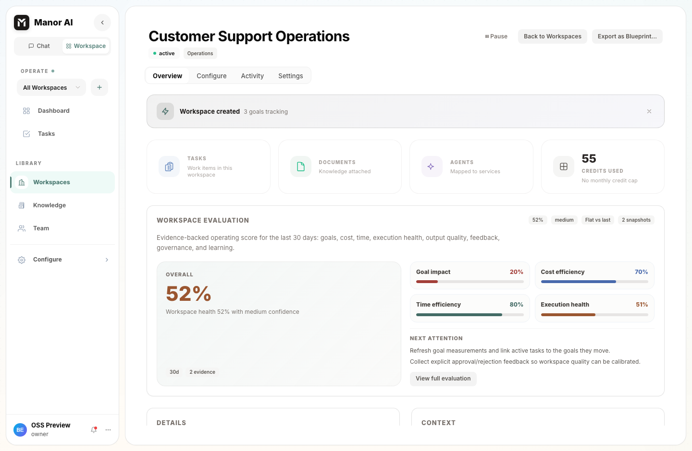
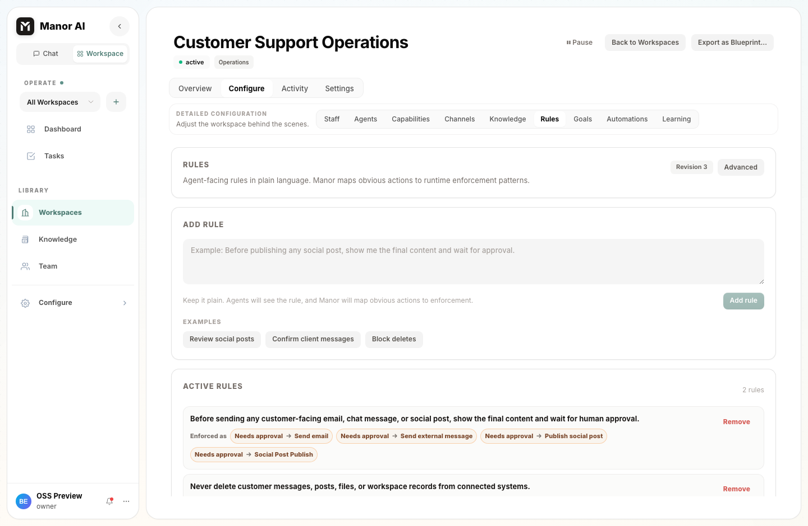
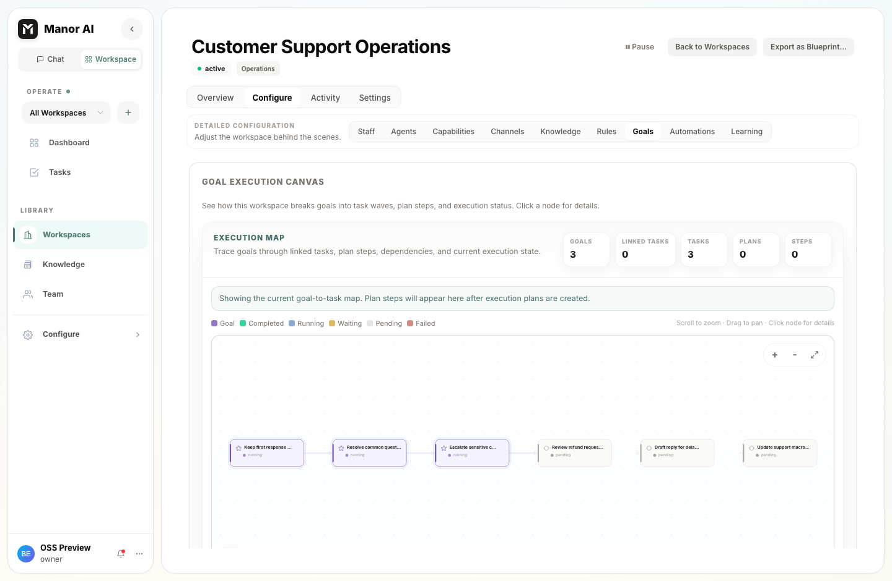
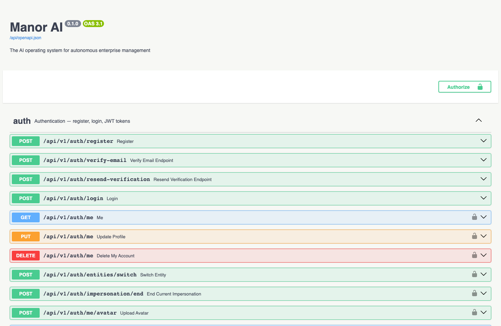

Overview
Manor AI
Run agents, tasks, documents, tools, integrations, and approval gates in one workspace that your team can inspect and operate.

Get from clone to operating workspace.
Boot the web app, API, worker, PostgreSQL, Redis, MinIO, and sandbox on one machine.
Understand the runtimeAgents, skills, tools, and HITLLearn how workspaces scope context, tool access, and review requirements.
Prepare a deploymentConfiguration and operationsSet secrets, model providers, storage, backups, and upgrade routines before inviting users.
Governance is part of the runtime, not a policy document.
Operators can write plain-language rules, map them to runtime action patterns, and require approval before customer-facing or irreversible actions run.
- Rules can require review before email, chat, or social posts are sent.
- Destructive actions can be denied at runtime instead of relying on prompt wording.
- Policy revisions make operator changes visible during audits.

Use the web app, or integrate directly against the API.


The self-hosted stack includes the runtime surface, not just an SDK.
Workspaces
Shared operating rooms for goals, tasks, documents, knowledge, channels, and activity.
Agents and tools
Scoped skills, tool calls, model routing, task execution, and audit-friendly traces.
HITL governance
Approval policies for externally visible, irreversible, or high-risk actions.
Self-hosted services
FastAPI, React, workers, PostgreSQL with pgvector, Redis, MinIO, and sandbox execution.
Designed for operators who want control.
Manor AI does not require hosted Manor AI services to boot, create workspaces, configure model keys, run agents, use the sandbox, or manage documents and knowledge. Start with Quick Start, then review Security and Backup and Restore before running important workloads.